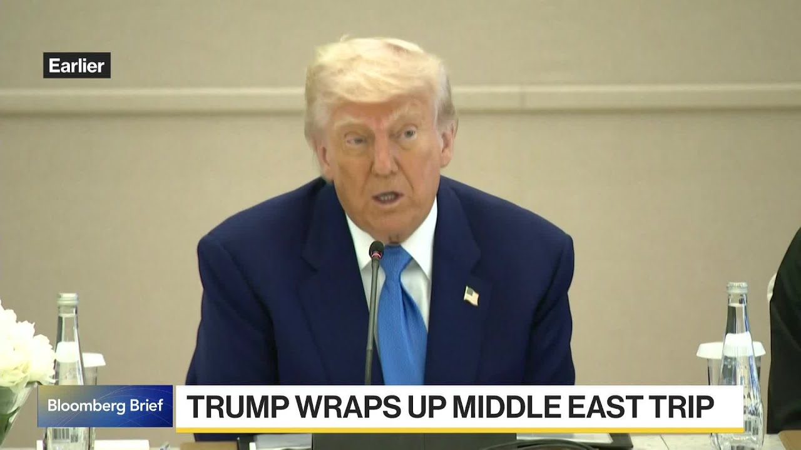

【特朗普总统中东之行结束，承诺将巨额投资带回美国】
Summary: PRES. TRUMP: WE HAVE COME AT THE SAME TIME, 150 COUNTRIES THAT WANT TO MAKE A DEAL, BUT YOU WANT ABLE TO SEE THAT MANY COUNTRIES, SO AT A CERTAIN POINT OVER THE NEXT TWO TO THREE WEEKS, LETTERS WILL BE SENT OUT ESSENTIALLY TELLING PEOPLE, I WILL BE VERY FAIR, BUT I WILL BE TELLING PEOPLE WHAT THEY WILL BE PAYING TO DO BUSINESS IN THE UNITED STATES.
摘要： 特朗普总统：我们同时面对150个希望达成协议的国家，但你们无法同时应对这么多国家，因此在未来两三周内，我们将发出信件，明确告知各方，我会非常公平，但也会告诉他们进入美国市场需要支付的费用。

⏱️ Estimated Reading Time: 4 min
DANI: PRESIDENT TRUMP WRAPPING UP HIS FIRST OVERSEAS TRIP OF HIS SECOND TERM IN THE MIDDLE EAST WITH A PROMISE OF INCREDIBLE INVESTMENT BACK INTO THE U.S.
达尼：特朗普总统结束了他第二任期的首次中东之行，承诺将巨额投资带回美国。
JOINING US IS BRENDAN MURRAY.
布伦丹·默里加入我们的讨论。
WE HEARD FROM THE PRESIDENT AS HE STARTS TO END HIS TRIP.
我们听取了总统在行程结束时的讲话。
BRENDAN: TO TRY TO GET THE FLOW OF MONEY BACK TO THE U.S. FOR THINGS LIKE FACTORIES AND ADVANCED EQUIPMENT INVESTMENTS THAT SOME OF THESE COUNTRIES HAVE COMMITTED TO DOING.
这次备受关注的访问有哪些关键点？
THE UAE IS BUILDING, FUNDING AN ALUMINUM FACILITY, THE PRESIDENT SAID.
布伦丹：目标是让资金回流美国，用于工厂和先进设备投资，部分国家已承诺参与。
THE MAIN THRUST OF HIS GOAL THIS WEEK WAS TO GET THE FLOW OF MONEY BACK TO THE U.S.
总统表示，阿联酋正在投资建设一座铝厂。
HE SPENT THE FIRST FOUR MONTHS OF HIS PRESIDENCY, HIS SECOND TERM, TRYING TO GET TRADE FLOWING, TRYING TO RENEGOTIATE TRADE DEALS.
他本周的主要目标是让资金回流美国。
THAT WOULD BE THE MAIN TAKE AWAY FROM THE FIVE DAYS HE SPENT THERE.
他在第二任期前四个月致力于推动贸易流动并重新谈判贸易协议。
DANI: THERE IS A LOOK AT WHO HAS BEEN ACCOMPANYING TRUMP.
这是他五天访问的主要成果。
SCOTT BESSENT WAS ALSO IN THE MIDDLE EAST.
达尼：看看陪同特朗普的人员。
JUST ABOUT AN HOUR AGO TRUMP SAID THE BESSENT WILL SEND LETTERS TO COUNTRIES SAYING WHAT THEY HAVE TO DO, WHAT THEY HAVE TO PAY TO DO BUSINESS IN THE U.S.
斯科特·贝森特也在中东。
IS THIS SCOTT BESSENT FULLY IN CONTROL OF AMERICAN TRADE POLICY?
约一小时前，特朗普表示贝森特将向各国发信，说明他们需要做什么以及进入美国市场的费用。
BRENDAN: THAT IS WHAT IT SOUNDS LIKE FROM WHAT WE HEARD FROM THE PRESIDENT TODAY.
斯科特·贝森特是否完全掌控美国贸易政策？
I THINK THAT THE MAIN TAKE AWAY FROM THOSE COMMENTS ABOUT THE 150 COUNTRIES IS THE U.S. ADMINISTRATION IS OVERWHELMED WITH THE AMOUNT OF TRADE NEGOTIATION THAT IT NEEDS TO DO.
布伦丹：从总统今天的表态来看，似乎如此。
THERE ARE NUMBER OF TALKS GOING ON BILATERALLY WITH INDIA, JAPAN, SOUTH KOREA, CHINA, AND THAT AS THE PRESIDENT SAID THERE ARE 150 COUNTRIES THAT WANT TO DO DEALS.
我认为关于150个国家的评论表明，美国政府面对大量贸易谈判感到力不从心。
THERE IS NOT THE CAPACITY TO HANDLE THAT.
目前正与印度、日本、韩国、中国进行双边谈判，而总统提到有150个国家希望达成协议。
IT SOUNDS LIKE A LOT OF THOSE COUNTRIES ARE GOING TO GET A LETTER SAYING THIS IS WHAT YOUR TARIFF RATE IS.
政府没有足够能力处理这些谈判。
HE WAS VAGUE ON DETAILS.
听起来许多国家将收到信件，告知其关税税率。
HE SAID THIS IS WHAT THEY WILL PAY TO DO BUSINESS, BUT IT SOUNDS LIKE THE RECIPROCAL TARIFFS THAT THE PRESIDENT ANNOUNCED ON APRIL 2, SOME OF THOSE COUNTRIES WILL GET A LETTER SAYING THIS IS WHAT YOUR NUMBER IS.
他在细节上含糊其辞。
DANI: WILL THEY BE WILLING TO ACCEPT FRAMEWORKS AKIN TO THE U.K. AND CHINA?
他表示这是他们进入美国市场的费用，但似乎与4月2日宣布的互惠关税有关，部分国家将收到具体税率的通知。
THE FT REPORTING, JAPAN APPEARS TO BE HOLDING OUT FOR A BETTER TRADE DEAL.
达尼：它们会接受类似英国和中国的框架吗？
BRENDAN: EXACTLY.
《金融时报》报道，日本似乎坚持要求更有利的贸易协议。
ONE OF THE THINGS THAT IS COMING TO LIGHT AS THE WEEKS PROGRESS IS THAT THE 10% FLOOR, RECIPROCAL TARIFF RATE FOR, IS NOT GOING AWAY.
布伦丹：没错。
A LOT WANT IT TO GO AWAY.
随着时间推移，10%的最低互惠关税税率不会取消。
SOUTH KOREA AND JAPAN AND A NUMBER OF COUNTRIES THAT HAVE FREE-TRADE AGREEMENTS WITH THE U.S. WHO SAY, LOOK, WE HAVE ZERO TARIFFS NOW AND THAT IS THE RATE THAT WE WANT.
许多国家希望取消这一税率。
THEY WILL FIND OUT, IT APPEARS QUICKLY, THAT THAT RATE IS NOT GOING ANYWHERE, AND THAT WILL BE
韩国、日本等与美国有自贸协定的国家表示，他们目前享受零关税，并希望维持这一税率。